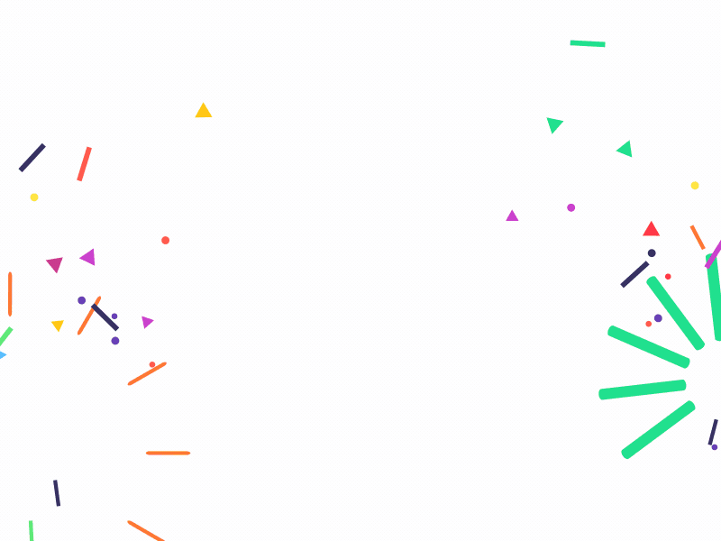

Not every survey has to be serious. This one is all about everyday opinions, habits, and a few fun questions along the way.
It will take approximately 6 minutes, and you'll earn 50 points once you complete it.
Ready to get started?

Thanks for sharing your everyday opinions and having a little fun along the way.
We'll let you know about new survey opportunities by email, and you can always check your dashboard for the latest surveys and activities available to you.
We look forward to hearing from you again soon! 🙂